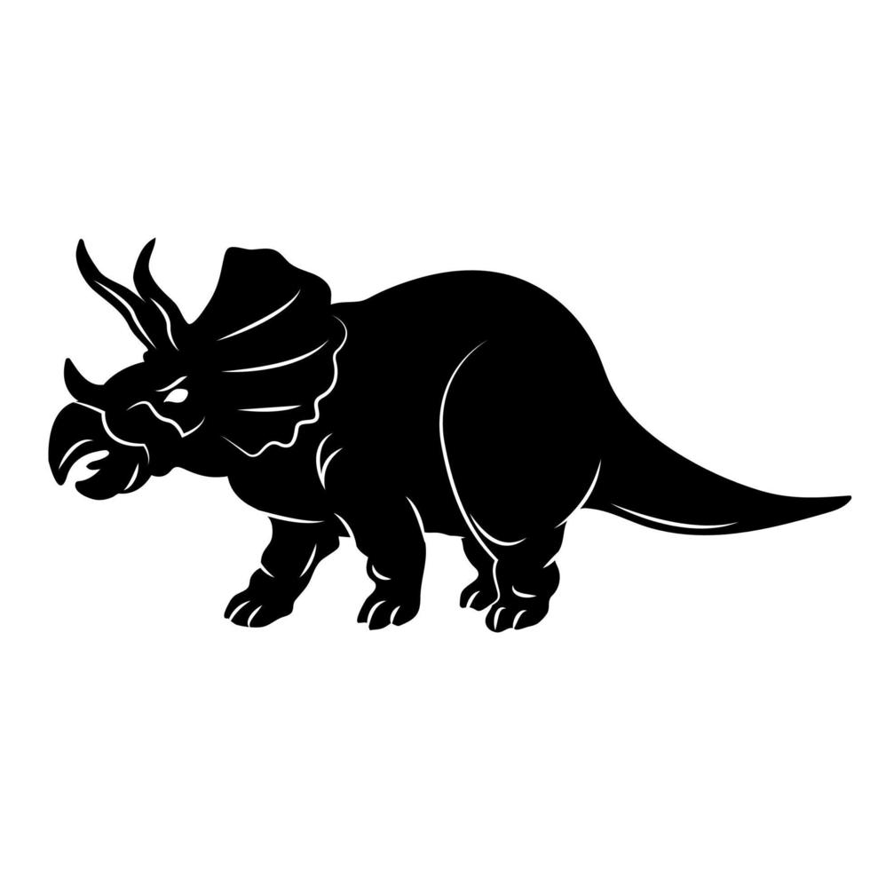
Ceratopsidae
A família Ceratopsidae ("Chifres nos olhos") é um grupo de dinossauro ornitísquios conhecidos por seus grandes chifres presente em seus crânios, eram, em sua maioria, grandes dinossauros, com tamanhos variando de 4 a 9 metros de comprimento entre os maiores da família. Com hábitos herbívoros, todos os dinossauros desta família possuiam um bico peculiar, em formato de bico de papagaio, que permitia cortar com facilidade as plantas que consumiam.

Spinosauridae
A família Spinosauridae é um grupo de dinossauros terópodes conhecidos por suas adaptações únicas para a vida semiaquática, principalmente durante o período Cretáceo. Caracterizados por seus crânios alongados e semelhantes aos dos crocodilos, esses predadores tinham dentes cônicos, ideais para agarrar peixes, o que sugere uma dieta piscívora. O mais famoso dos espinossaurídeos, o Spinosaurus aegyptiacus, tinha uma imensa "vela" nas costas formada por extensas vértebras, que pode ter ajudado na regulação da temperatura corporal ou em exibições para atrair parceiros.

Tyrannosauridae
A família Tyrannosauridae é um grupo de dinossauros terópodes carnívoros que inclui alguns dos predadores mais famosos e temidos do período Cretáceo, como o Tyrannosaurus rex. Esses dinossauros eram bípedes com fortes patas traseiras, braços pequenos e adaptados, e crânios massivos com mandíbulas poderosas, capazes de exercer uma força de mordida impressionante. Vivendo há aproximadamente 68 a 66 milhões de anos, eles ocupavam o topo da cadeia alimentar na América do Norte e na Ásia.
Dromaeosauridae
A família Dromaeosauridae inclui dinossauros terópodes ágeis e altamente adaptados para a caça, popularmente conhecidos como "raptores". Esses dinossauros, que viveram durante o período Cretáceo, são caracterizados por sua estrutura leve, longas caudas rígidas e uma garra em forma de foice no segundo dedo de cada pé, usada para capturar e segurar presas. Com membros traseiros robustos, provavelmente eram caçadores rápidos e possivelmente sociais, caçando em grupos em algumas espécies.
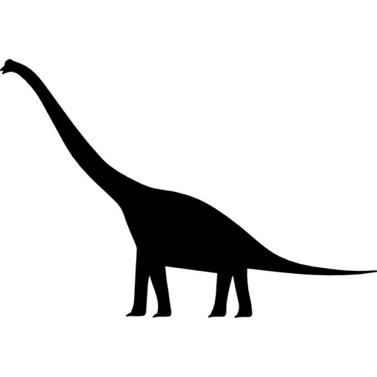
Brachiosauridae
A família Brachiosauridae são formados por dinossauros saurópodes, herbívoros que viveram durante o Jurássico, e inclui animais do gênero Brachiosaurus. Possuem patas dianteiras mais longas que as traseiras, e pescoço longo e quase vertical. Sendo criaturas de dimensões imensas, os membros desta família variavam de 20 a 90 toneladas e mediam em média de 20 a 30 metros de comprimento. Foram os maiores animais terrestres que habitaram a terra, possuindo também o maior esqueleto montado do mundo.
Ceratopsidae
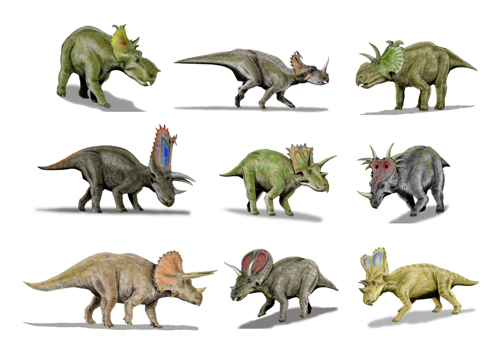
Ceratopsidae (que significa "chifres nos olhos") é uma família de dinossauros ceratopsianos ornitísquios, característicos do Cretáceo Superior. Os ceratopsídeos, como são chamados os dinossauros pertencentes à essa família, viveram principalmente na América do Norte. Os ceratopsídeos se alimentavam de vegetais, caracterizando assim uma alimentação herbívora, comum a todos os ceratopsianos. Tinham um bico proeminente em sua mandíbula.
Esses dinossauros variavam bastante de tamanho, entre de 4 metros de comprimento até os maiores, com estimativas de até 9 metros de comprimento. A principal característica que difere a família dos ceratopsídeos das demais famílias de ceratopsianos é justamente o seu tamanho, os ceratopsídeos são os maiores e mais bem desenvolvidos da infraordem Ceratopsia.
Triceratops
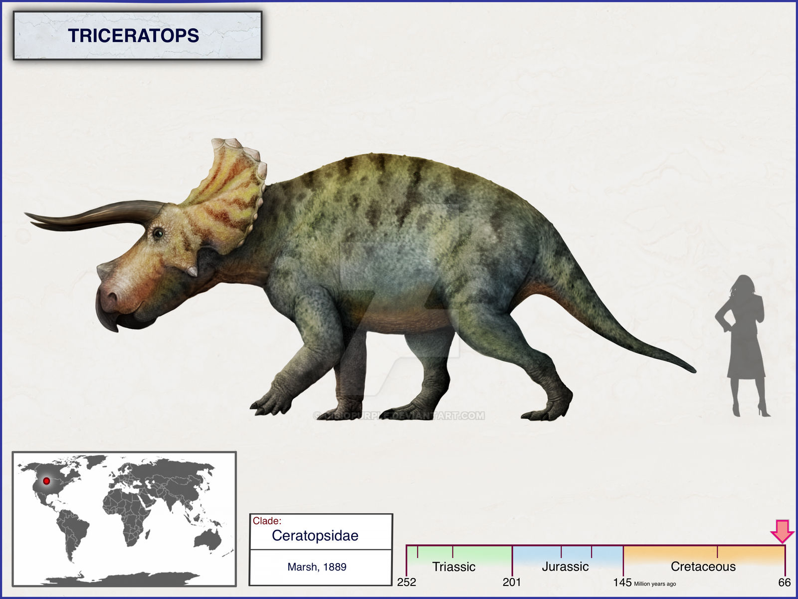
O Triceratops é conhecido pelo impressionante crânio com três chifres e um grande folho ósseo, características que provavelmente desempenhavam vários papéis. O chifre nasal e os dois chifres acima dos olhos poderiam ser usados para defesa contra predadores como o Tyrannosaurus rex. Evidências fósseis sustentam essa teoria: fósseis de Triceratops com marcas de mordidas de T. rex mostram sinais de cicatrização, indicando que alguns desses indivíduos sobreviveram a confrontos diretos com predadores, esses chifres e o folho podem ter sido importantes para interações sociais e reprodutivas. Marcas de perfuração em alguns fósseis de folhos sugerem que os machos lutavam entre si, possivelmente para impressionar fêmeas ou estabelecer hierarquias .
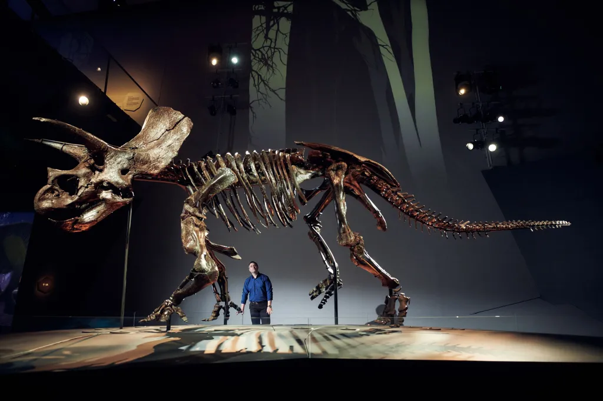
Apesas dinossauros herbívoros com chifres terem sido encontrados em grandes grupos, sugerindo comportamento de rebanho, o Triceratops parece ter sido um caso à parte. Os fósseis geralmente são descobertos isolados, o que sugere um estilo de vida mais solitário. Acredita-se que seu grande tamanho e armamento natural poderiam permitir que ele sobrevivesse sem a proteção de um grupo.

Esses aspectos físicos tornam o Triceratops uma espécie fascinante para os paleontólogos, fornecendo insights sobre as adaptações e a sobrevivência dos grandes herbívoros em um ambiente repleto de predadores formidáveis como o T. rex.
Diabloceratops
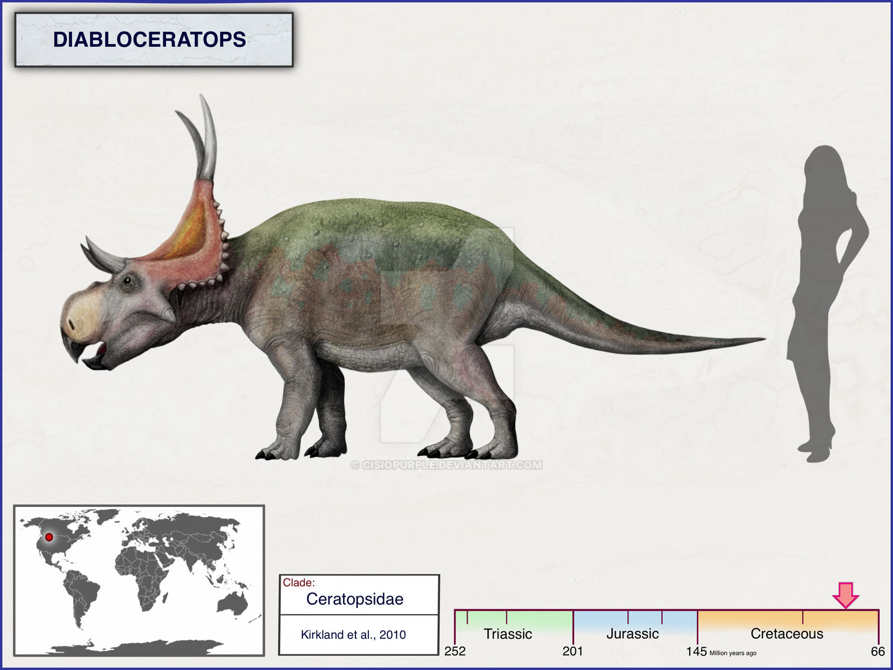
O Diabloceratops ("chifres do diabo") foi um dinossauro herbívoro que viveu durante o período cretáceo superior, há cerca de 79,5 milhões de anos de anos atrás. Com uma aparência no mínimo agressiva, o diabloceratops conta com chifres longos acima de seus olhos e um chifre nasal curto, diferente da maioria dos outros ceratopsianos mas se aproximando de seu "primo" Triceratops. Porém, ao contrário do Triceratops, o Diabloceratops conta com dois chifres acima de seu babado. Como todos os ceratopsianos, o Diabloceratops possuia um bico, muito parecido com o bico de um papagaio, para se alimentar de plantas.
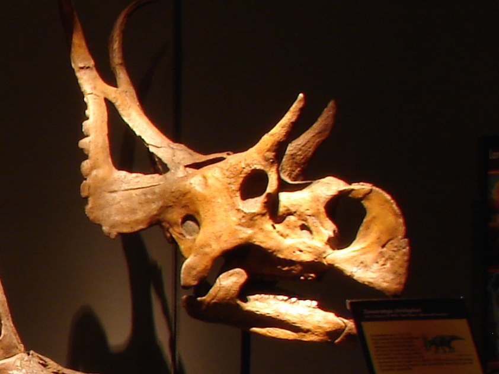
O primeiro fóssil desta criatura foi descoberto em 1998 no sul de Montana. Cientístas acreditam que esta espécie pode ter sido um ancestral primitivo dos ceratopsianos, como triceratops e styracossauros, os paleontólogos sabem pouco sobre a evolução inicial dos ceratopsianos. Embora tenhamos mais de 30 espécies entre 78 e 65 milhões de anos atrás, apenas três espécies foram descobertas entre 90 e 78 milhões de anos atrás. Isso torna o Diabloceratops — um dinossauro exclusivo de Utah — uma adição importante ao nosso conhecimento da evolução dos dinossauros com chifres.
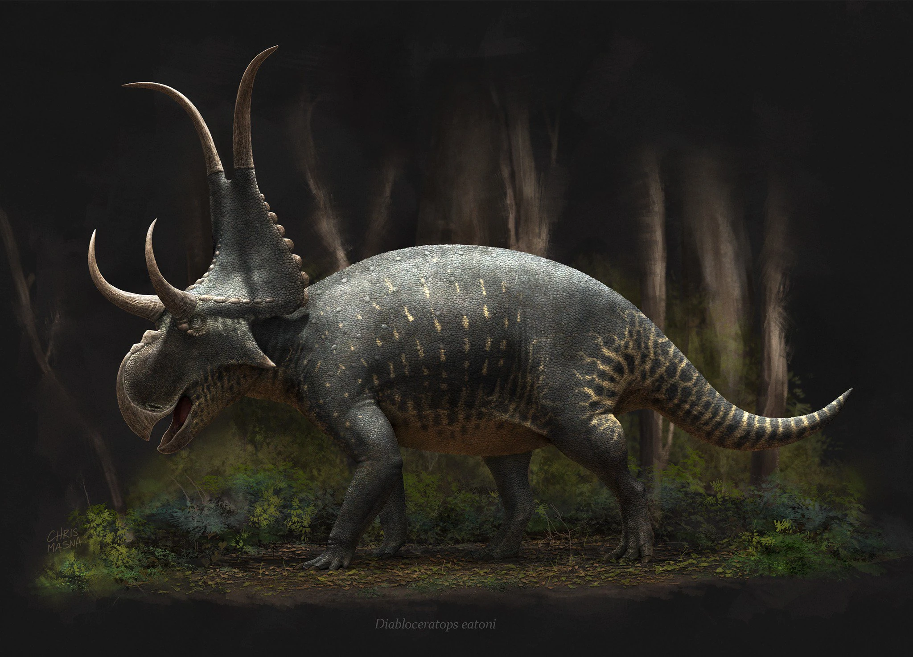
Os únicos dois espécimes de Diabloceratops foram encontrados no estado de Utah, na formação Wahweap. O primeiro foi descoberto em 1998, por Joshua A. Smith, e o segundo, em 2002, coletado por Donald de Blieux. Ambos, porém, não foram descritos até 2010, quando James Kirkland e De Blieux nomearam o Diabloceratops.
Estiracossauro
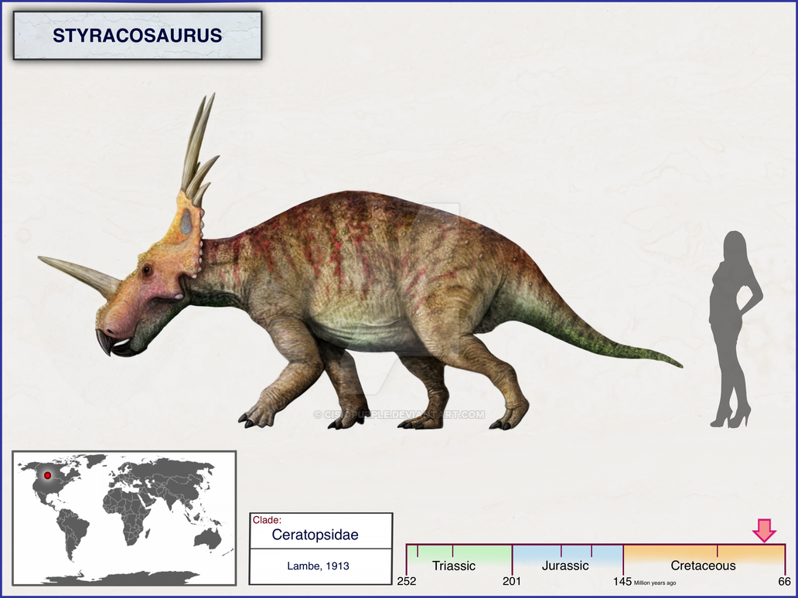
O estiracossauro foi um dinossauro herbívoro que viveu no período Cretáceo, há cerca de 76-75 milhões de anos atrás. Com um arranjo impressionante de chifres por todo seu crânio, o estiracossauro sem dúvidas era um dinossauro fortemente armado contra predadores, afinal, os cientistas acreditam que esses chifres serviam como método de defesa, afinal, acredita-se que este dinossauro era certamente muito lento. Especialistas acreditam que esta criatura viviam em rebanho, graças as descobertas de vários espécimes de Styracosaurus juntos em um leito ósseo sugere que eles viveram e morreram juntos.
~
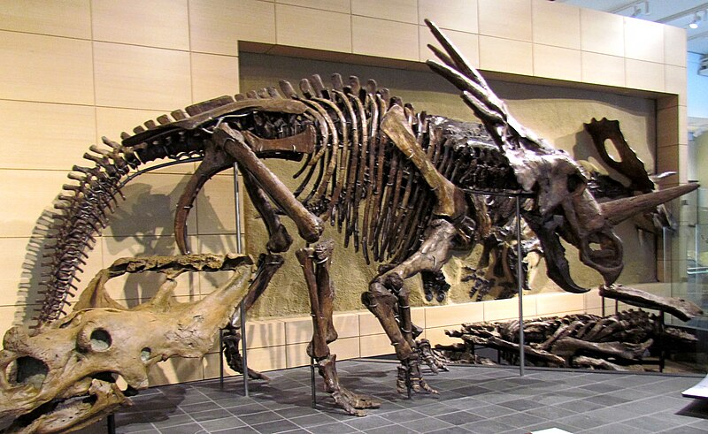
Os primeiros fósseis de estiracossauro foram descobertos em 1913, na Alberta, Canadá. Lugar esse que hoje é conhecido como Dinosaur Provincial Park. Em 1915, um grupo de caça a fósseis visitou o parque e se depararam com outro esqueleto de estiracossauro. Esqueleto este que estava quase completo.
Então, em 1935, um grupo de cientistas canadenses revisitou o local da descoberta original do estiracossauro e encontraram ainda mais fósseis.
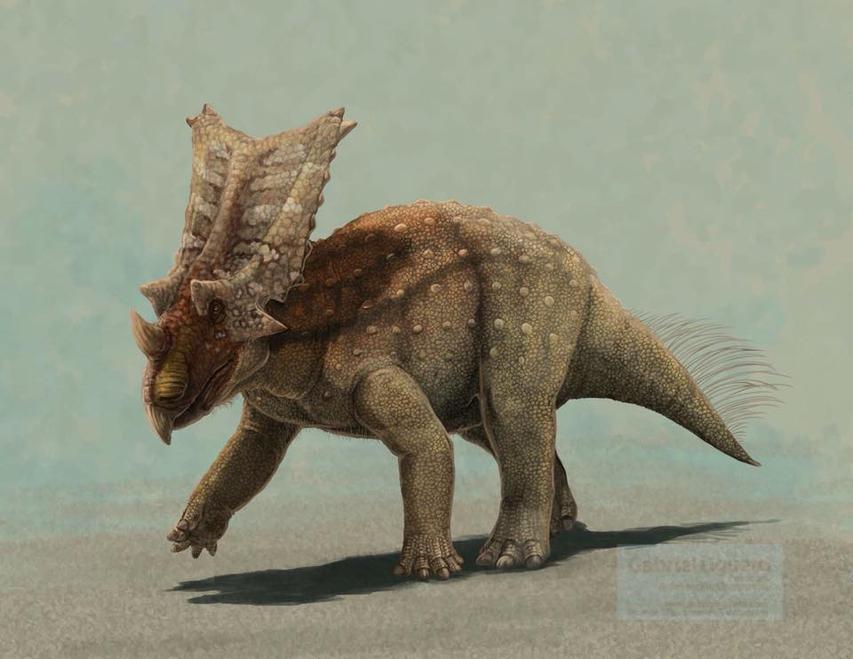
Acredita-se que a quantidade de chifres desta espécie variavam entre os indivíduos, alguns crânios desta espécie foram encontrados com seis chifres, enquanto outros apresentavam oito. Apesar de usarem seus chifres para defesa, especialistas acreditam que o estiracossauro teria sido presa de diversos dinossauros carnívoros, por conta de viver ao lado de grandes predadores.
Spinosauridae
Os Spinosauridae são uma família de dinossauros terópodes que viveram durante o período Cretáceo, conhecidos principalmente por sua adaptação única a um estilo de vida semiaquático e dieta especializada. Seu membro mais famoso, o Spinosaurus aegyptiacus, destacava-se por sua impressionante vela dorsal, possivelmente usada para regulação térmica, exibição social, ou armazenamento de energia. Esses dinossauros, caracterizados por seus crânios longos e estreitos, semelhantes aos de crocodilos, e dentes cônicos, diferem da maioria dos terópodes carnívoros, como os tiranossaurídeos, por mostrarem adaptações para uma dieta piscívora.
Fósseis e estudos sobre os espinossaurídeos sugerem que tinham membros dianteiros bem desenvolvidos, com garras poderosas, possivelmente úteis tanto para capturar presas aquáticas quanto para se mover em ambientes aquáticos e costeiros. A estrutura de seus ossos sugere adaptações para a natação e mergulho, o que, combinado com sua morfologia dentária, indica que caçavam peixes e outros animais aquáticos. Além do Spinosaurus, outros gêneros, como Baryonyx e Suchomimus, também compartilham essas características, embora com adaptações menores para o ambiente aquático.
As pesquisas sobre os espinossaurídeos estão em constante desenvolvimento, e a compreensão de seu comportamento, fisiologia e relação com outros dinossauros continua a evoluir à medida que mais fósseis são descobertos.
Spinosaurus
Maior que um Tyrannosaurus rex, o predador de 16 metros de comprimento e 7 toneladas tinha uma enorme vela nas costas e uma narina alongada que parecia a boca de um crocodilo, cheia de dentes cônicos. Por décadas, reconstruções de seu volumoso corpo mostravam uma cauda longa que se afinava até a ponta e que se assemelhava às de muitos dos seus primos terópodes. O Espinossauro (Lagarto Espinho) é um dinossauro carnívoro fascinante que habitou a África durante o período Cretáceo. Suas características únicas sugerem que ele pode ter levado um estilo de vida semiaquático, passando muito tempo em ambientes aquáticos e costeiros.
A compreensão do Spinosaurus evoluiu significativamente nas últimas décadas. Inicialmente, por mais de 100 anos, os cientistas o imaginaram como um predador totalmente terrestre, baseado em restos fósseis incompletos. A primeira descoberta em 1912 foi, lamentavelmente, destruída durante a Segunda Guerra Mundial, limitando o conhecimento sobre o animal por um longo tempo. Pesquisas mais recentes revelaram que o Spinosaurus possuía pernas curtas e uma cauda larga em forma de pá, o que indica adaptações para um estilo de vida aquático O formato das mandíbulas do Spinosaurus indica que sua dieta era predominantemente composta de peixes, embora ele também pudesse ter se alimentado de outros dinossauros. Essa característica, juntamente com seu habitat aquático, torna o Spinosaurus um dos poucos dinossauros conhecidos que provavelmente se especializou na captura de presas aquáticas.
A vela nas costas do Spinosaurus, que chegava a 1,5 metro de altura, é objeto de várias teorias. Cientistas sugerem que essa estrutura poderia ter funções como a regulação da temperatura corporal, uma exibição de acasalamento, ou até mesmo como um auxílio na natação. Embora haja especulações sobre aa corcova carnuda em vez de uma vela fina, pesquisas recentes tendem a apoiar a ideia de que a vela era, de fato, uma estrutura delgada.
Ichthyovenator
O Ichthyovenator é um dinossauro carnívoro do grupo dos espinossaurídeos, e suas características físicas são notáveis. Estima-se que uma amostra do holótipo tenha entre 8,5 a 10,5 metros de comprimento e pesasse cerca de 2,4 toneladas. Os dentes do Ichthyovenator eram retos e cônicos, adequados para capturar e segurar presas. Diferentemente de outros espinossaurídeos, a vela do Ichthyovenator apresentava uma forma sinusoidal, curvando-se para baixo sobre os quadris e se dividindo em duas velas separadas. Essa estrutura pode ter desempenhado funções tanto na regulação térmica quanto em exibições sociais, semelhante a outras velas de dinossauros conhecidos.
Os fósseis do Ichthyovenator foram descobertos em 2013, na Formação de Khouribga, em Marrocos, e representam um dos primeiros espinossaurídeos conhecidos da região. A amostra do holótipo inclui várias vértebras, incluindo os espinhos neurais que formam a distintiva vela nas costas do dinossauro, além de dentes que ajudam a esclarecer sua dieta predominantemente piscívora. O Ichthyovenator é notável por sua estrutura óssea, que fornece informações valiosas sobre a diversidade morfológica dos espinossaurídeos. A forma sinusoidal da vela em suas costas é única entre os espinossaurídeos, sugerindo que esse dinossauro tinha adaptações específicas para o seu ambiente semiaquático.
O Ichthyovenator, como outros espinossaurídeos, é considerado um predador aquático, e seus hábitos de caça refletem essa adaptação. Com base em suas características morfológicas, como a mandíbula alongada e os dentes cônicos e retos, acredita-se que ele tenha se especializado na captura de peixes. Esses dentes são ideais para agarrar presas escorregadias, indicando uma dieta predominantemente piscívora. Assim como acontece com os outros espinossaurídeos que possuem velas em suas costas, o motivo para a existência da vela é um mistério, existindo apenas hipóteses e teorias que dizem que servia para regulação da temperatura corporal ou acasalamento
Irritator
O Irritator é um dinossauro carnívoro do período Cretáceo, conhecido principalmente pelo seu crânio, o que limita nosso entendimento sobre sua morfologia e hábitos. Assim como o Spinosaurus, acredita-se que o Irritator tenha possuído adaptações aquáticas, embora detalhes sobre sua vela sejam especulativos devido à falta de fósseis completos.
O Irritator foi descoberto em 1996 na formação sedimentar de São José de Itaboraí, no estado do Rio de Janeiro, Brasil. Os primeiros fósseis, que incluem um crânio, foram encontrados por uma equipe de paleontólogos liderada por Alexander Kellner. Essa descoberta foi significativa, pois o crânio é o único material fóssil conhecido da espécie até hoje. Atualmente o crânio se encontra ilegalmente na alemanha, em 2023, brasileiros e europeus publicaram uma carta conjunta pela restituição ao Brasil do fóssil do dinossauro Irritator challengeri, depois de ter sido contrabandeado do Brasil. Além disso, cientistas brasileiros lançam uma campanha chamada #irritatorbelongstobr, para repatriar o fóssil.
Com relação à sua dieta e hábitos de caça, é provável que o Irritator se especializasse na captura de peixes, semelhante ao Spinosaurus. O formato do seu crânio sugere que ele possuía dentes adaptados para agarrar presas aquáticas, embora a sua habilidade de caça em terra ainda seja uma área de discussão entre os cientistas. Os especialistas acreditam que, assim como outros espinossaurídeos, o Irritator poderia ter adotado estratégias de emboscada em ambientes aquáticos, utilizando a vegetação para se esconder antes de atacar.
Tiranosauridae
A família Tyrannosauridae é composta por alguns dos predadores mais icônicos da era dos dinossauros, incluindo o famoso Tyrannosaurus rex. Esses dinossauros terópodes dominaram os ecossistemas da América do Norte e da Ásia durante o período Cretáceo Superior. Caracterizados por suas mandíbulas extremamente robustas, dentes serrilhados e uma incrível força de mordida, os tiranossaurídeos eram caçadores altamente adaptados, provavelmente situando-se no topo da cadeia alimentar em seus habitats.
Os tiranossaurídeos possuíam crânios largos e altos, adaptados para resistir à pressão das mordidas poderosas, com um sistema de musculatura eficiente que permitia esmagar ossos para acessar a medula, uma rica fonte de nutrientes. Seus braços, embora curtos, eram musculosos e terminavam em duas garras fortes, que ainda não se sabe ao certo como eram usados, mas acredita-se que poderiam servir para segurar presas ou auxiliar na locomoção ao se erguerem do solo.
Além de sua impressionante força física, alguns estudos sugerem que os tiranossaurídeos tinham boa visão binocular e olfato apurado, habilidades úteis para um predador. Essas capacidades, junto com a evidência de que podiam alcançar altas velocidades para seu tamanho e porte, apontam para um comportamento predatório ativo, e há também evidências de que poderiam ser necrófagos, aproveitando-se de restos de animais mortos para se alimentar.
Entre os membros da família, além do T. rex, destacam-se gêneros como o Albertosaurus e o Daspletosaurus, que eram um pouco menores, mas ainda assim mortais em seus ecossistemas.
Tiranossauro Rex
A primeira espécie dos Tyrannosauridae que vamos entrar em detalhes não poderia ser diferente, aquele conhecido como o Rei dos Dinossauros: Tiranossauro Rex. Sem dúvidas o dinossauro mais famoso de todos os tempos, os T. Rex (como conhecidos) viveram entre 66 e 68 milhões de anos atrás, no final do período Cretáceo. Desde sua descoberta a aparência real de um Tiranossauro era uma icógnita, no passado era retratado quase como um monstro, principalmente pelo cinema das eras antigas. Mas devemos lembrar de que essa criatura era um animal como qualquer outro. Apresento-lhes Sue, o esqueleto de Tiranossauro mais completo já achado até hoje.

O T. Rex era um carnívoro com a massa de um elefante africano e a quantidade de musculo necessária para manter essa criatura em pé era imensa, ocasionando em um corpo robusto e musculoso, completamente diferente das representações dos Tiranossauros que os colocavam como criaturas magras. Logo abaixo está uma representação de como pode ter sido a Sue em vida.

A polêmica acerca dos filhos dos Tiranossauros
O Tyrannosaurus rex foi uma espécie muito abundante durante sua existência; estudos indicam que aproximadamente 2,5 bilhões de indivíduos dessa espécie existiram ao longo do tempo. No entanto, por anos, os cientistas ficaram perplexos ao tentar encontrar fósseis de indivíduos juvenis. Afinal, como uma espécie tão abundante não deixaria registros de sua juventude? Uma teoria científica busca responder essa questão: uma espécie chamada Nanotyrannus, com características diferentes das de um T. rex adulto, como focinho estreito, pernas mais longas e dentes mais finos, poderia, na verdade, representar T. rex jovens. Curiosamente, até hoje, nenhum exemplar conhecido de Nanotyrannus parece ter alcançado a fase adulta.
Comparação entre um Nanotyrannus e um Tyrannosaurus rex
Por serem tão distintos dos adultos, os jovens T. rex podem ter ocupado um nicho ecológico diferente. Essa hipótese, conhecida como "transição ontogenética de nicho", sugere que durante a juventude o T. rex adotava um tipo de estratégia de caça diferente dos adultos, possivelmente para evitar competição por recursos entre indivíduos de idades variadas. Essa adaptação teria ajudado a garantir a abundância da espécie ao longo de sua existência. Vale lembrar de que isso está em debate por anos na comunidade científica e nem todos os pesquisadores concordam com tal teoria, afinal, estudos recentes mostram que talvez os Nanotyrannus tenham sido uma espécie de tiranossaurídeo separada dos T. Rex
Nanotirano
O Nanotyrannus, cujo nome significa "pequeno tirano", é um assunto de grande debate na paleontologia. Ele viveu no fim do período Cretáceo, há aproximadamente 68 milhões de anos. Esse pequeno tiranossaurídeo foi descrito inicialmente como uma espécie distinta, mas muitos cientistas sugerem que Nanotyrannus pode, na verdade, representar um estágio juvenil do Tyrannosaurus rex. O primeiro registro fóssil de um Nanotyrannus, foi de seu crânio, encontrado em 1942 pelo paleontólogo americano David H Dunkle, em Montana

Nanotyrannus, seja ele um T. rex juvenil ou uma espécie válida, viveu na região oeste da América do Norte, contemporâneo ao T. rex. Naquela época, grande parte dessa área era coberta por um mar interior raso, com as montanhas rochosas elevando-se no extremo oeste. O clima tendia a ser quente e úmido durante o ano todo. A vegetação era dominada por florestas de carvalhos, bétulas, coníferas e magnólias, além de pântanos costeiros repletos de samambaias, ciprestes e árvores semelhantes a sequóias. A fauna incluía muitos animais que reconheceríamos hoje, como pássaros, insetos, serpentes, crocodilos, anfíbios e pequenos mamíferos, juntamente com dinossauros herbívoros como o Triceratops, hadrossauros e anquilossauros.
Nanotyrannus, como outros tiranossauros, era um predador, com dentes serrilhados que eram ótimos para fatiar e comer carne. Eles tinham visão estereoscópica, como a maioria dos predadores, e provavelmente eram muito ágeis. Assim como muitos outros dinossauros, é difícil especular com precisão como foi a aparência de um nanotyrannus, os registros fósseis não são tão completos, deixando a comunidade científica com dúvida acerca de sua real imagem.
Albertossauro
Albertosaurus (significa "lagarto de alberta") foi um grande tiranossauro do Cretáceo Superior do oeste da América do Norte. Este dinossauro feroz e carnívoro era mais baixo e mais leve que o Tyrannosaurus rex e pertence a uma subfamília diferente, Albertosaurinae, junto com o Gorgosaurus.

O esqueleto do Albertosaurus – como o de outros albertosaurinos – difere do de tiranossauros como o T. rex por seu crânio mais curto e inferior, ossos do quadril mais curtos (ílios) e ossos dos membros posteriores inferiores proporcionalmente mais longos (tíbias, metatarsos e ossos dos dedos dos pés). Como outros tiranossauros, ele andava sobre duas pernas poderosas e tinha uma cabeça grande - seu crânio crescia até cerca de um metro de comprimento. Ele tinha mãos com dois dedos em braços curtos e uma cauda longa que fornecia equilíbrio e a capacidade de virar rapidamente. A mandíbula inferior do Albertosaurus tinha 14-16 dentes; a mandíbula superior tinha 17-19 dentes. O Albertosaurus também tinha uma crista óssea curta e distinta acima dos olhos que pode ter sido colorida e usada para atrair uma parceira.

O Albertosaurus era um predador com dentes afiados, tipicamente serrilhados em uma borda para auxiliar no corte de carne e ossos, utilizando uma ação de "agarrar e rasgar". Seu porte moderado, aliado ao ambiente menos denso em vegetação, sugere que poderia caçar tanto emboscando quanto perseguindo presas em longas corridas, atingindo velocidades de até 30 km/h. Além disso, sua cauda lhe proporcionava agilidade, ajudando-o a mudar de direção em alta velocidade. Estudos indicam que Albertosaurus poderia atacar presas de tamanho similar ou maior com uma técnica de "mordida e corte", em vez de uma matança rápida. Essa estratégia poderia ter sido útil ao caçar grandes saurópodes. Evidências fósseis, incluindo a descoberta de mais de 20 espécimes juntos, apontam para a possibilidade de que caçava em grupo.
Dromaeosauridae
A família Dromaeosauridae, frequentemente referida como "raptores", inclui dinossauros ágeis, carnívoros e predadores, conhecidos por suas garras curvas e afiadas nos pés e por serem altamente inteligentes para os padrões dos dinossauros. Com membros como o Velociraptor, Deinonychus e Utahraptor, os dromeossaurídeos viveram predominantemente durante o período Cretáceo, habitando áreas que atualmente fazem parte da Ásia, Europa e América do Norte.
Esses dinossauros possuíam corpos esbeltos e musculosos, com caudas longas e rígidas que ajudavam no equilíbrio e nas manobras rápidas durante a caça. Suas pernas eram adaptadas para corridas ágeis, permitindo perseguições em alta velocidade, enquanto a garra curva em forma de foice no segundo dedo de cada pé era uma ferramenta mortal para capturar e dilacerar suas presas. Essa garra podia ser mantida retraída para não desgastar-se durante a movimentação e, em momentos de ataque, era usada para perfurar ou rasgar a pele de outros animais.
Muitos dromeossaurídeos também apresentavam penas, e há evidências que sugerem que algumas dessas espécies estavam evolutivamente próximas das primeiras aves. Embora incapazes de voar, essas penas poderiam ter funções como isolamento térmico, exibições sociais ou até auxiliar na aerodinâmica, proporcionando estabilidade e controle em saltos.
O cérebro relativamente grande em comparação a outros dinossauros indica que os dromeossaurídeos provavelmente possuíam um comportamento social complexo e habilidades cognitivas mais avançadas, podendo até caçar em grupos para aumentar o sucesso em capturar presas maiores. Essa combinação de inteligência, agilidade e um conjunto de adaptações físicas afiadas tornava os dromeossaurídeos alguns dos predadores mais formidáveis da era dos dinossauros.
Velociraptor
O Velociraptor mongoliensis foi um pequeno dinossauro carnívoro que viveu na região da China e Mongólia há cerca de 80 milhões de anos. Pertencia à família Dromaeosauridae, que ocorreu no Hemisfério Norte durante o Cretáceo. Com dentes afiados e um corpo leve e ágil, ele apresentava pernas e dedos alongados, um cérebro relativamente grande, crânio leve e braços longos. A característica mais marcante desse dinossauro era uma garra em forma de foice em cada pé, usada de forma letal para caçar. Suas mãos possuíam dedos entrelaçados, e várias de suas características eram semelhantes às de aves, indicando uma proximidade evolutiva com elas.

O Velociraptor mongoliensis foi descoberto pela primeira vez em 1924 no que é hoje o Deserto de Gobi, na Mongólia. Seu nome significa "ladrão veloz da Mongólia" em referência ao seu possível hábito de roubar ovos de dinossauros de ninhos. Menor do que outros dromaeossaurídeos como os Deinonychus e Utahraptor, o Velociraptor, no entanto, compartilhou muitas das mesmas características anatômicas. Era um carnívoro bípede, emplumado com uma longa cauda e uma garra em forma de foice em cada pata traseira, que é pensado para ser usado para combater a presa. Velociraptor pode ser distinguido de outros dromaeossaurídeos por seu crânio longo e baixo, com um nariz voltado para cima.
Além de ser um ícone da cultura popular, o Velociraptor desempenha um papel fundamental na paleontologia, oferecendo pistas sobre a ligação entre dinossauros e aves modernas. Suas características anatômicas, como as penas e a estrutura leve, indicam que alguns dos comportamentos e adaptações de aves podem ter surgido nos dinossauros terópodes, reforçando a teoria de que as aves são descendentes diretos desses animais pré-históricos. Estudar o Velociraptor e outros dromaeossaurídeos permite aos cientistas compreender melhor a evolução dos predadores do Cretáceo e sua adaptação ao ambiente, incluindo as mudanças que levaram ao surgimento das aves como conhecemos hoje.
Utahraptor
O Utahraptor era um dinossauro carnívoro da América do Norte, pertencente ao grupo dos dromeossaurídeos, assim como o Velociraptor. No entanto, o Utahraptor se destacava por seu tamanho e estrutura robusta, sendo o maior membro do grupo descoberto até hoje, atingindo até 5,5 metros de comprimento. Ao contrário de seus parentes menores, como o Velociraptor e o Bambiraptor, que eram ágeis e esguios, o Utahraptor possuía um corpo mais pesado, o que tornava improvável que fosse tão rápido. É possível que ele tenha adotado um estilo de caça mais focado em emboscadas do que em ataques diretos.
Embora não haja evidências fósseis diretas de que ele tinha penas, as semelhanças com outros dromeossaurídeos menores, que possuíam essa cobertura, sugerem que o Utahraptor provavelmente também era emplumado, reforçando a hipótese de que as penas eram uma característica comum entre esses predadores. Com garras curvas e afiadas nos pés e membros longos e musculosos, os Utahraptors usavam suas garras como armas principais. Além disso, como outros membros de sua família, provavelmente atacavam com saltos precisos e rápidos para subjugar a presa com garras e dentes, facilitados por habilidades de corrida e manobras ágeis.

Como o maior dromaeossaurídeo conhecido, o Utahraptor é uma peça fascinante do quebra-cabeça evolutivo. Suas características únicas, como o tamanho e as prováveis táticas de caça em grupo, oferecem uma visão detalhada sobre como esses predadores adaptaram sua fisiologia e comportamento para sobreviver em um ambiente competitivo e desafiador. Ainda que muito sobre seu comportamento e aparência dependa de interpretações fósseis e comparações com parentes próximos, o Utahraptor permanece uma figura essencial para entender a diversidade e a complexidade dos predadores do Cretáceo.
Deinonychus
O Deinonychus não é apenas um exemplo fascinante de adaptação evolutiva entre os dromaeossaurídeos, mas também oferece uma janela para o comportamento de caça desses predadores do Cretáceo. Suas garras afiadas e a cauda rígida, que ajudava a equilibrar seu corpo, sugerem que ele poderia ter utilizado táticas de emboscada ou ataque rápido para capturar presas. Seu design corporal, com adaptações específicas, o torna uma figura intrigante na história da vida pré-histórica. O estudo do Deinonychus continua a nos ensinar sobre a diversidade e a complexidade dos predadores de sua época.

Os fósseis encontrados mostram que esse dinossauro tinha um esqueleto leve, mas robusto, com adaptações que indicam um predador eficiente. A estrutura dos ossos longos e finos sugere uma boa agilidade para o tamanho do animal. Um dos aspectos mais notáveis do esqueleto do Deinonychus é a grande garra em forma de foice presente no segundo dedo de cada pé, mantida em posição elevada quando não estava em uso para manter-se afiada. A cauda longa e rígida, composta por vértebras que contribuíam para a estabilidade, também é uma característica distintiva, permitindo que o Deinonychus equilibrasse seu corpo durante a corrida ou ataque.
Os hábitos de caça do Deinonychus são objeto de discussão entre paleontólogos. Acredita-se que ele era um caçador oportunista, provavelmente atacando presas menores e possivelmente colaborando em grupo, como sugerido por algumas evidências fósseis. Enquanto algumas representações o mostram como um predador ágil, pesquisas recentes indicam que suas estratégias de caça podem ter incluído emboscadas, aproveitando sua camuflagem e táticas de grupo para capturar presas de maneira eficaz.
Brachiosauridae
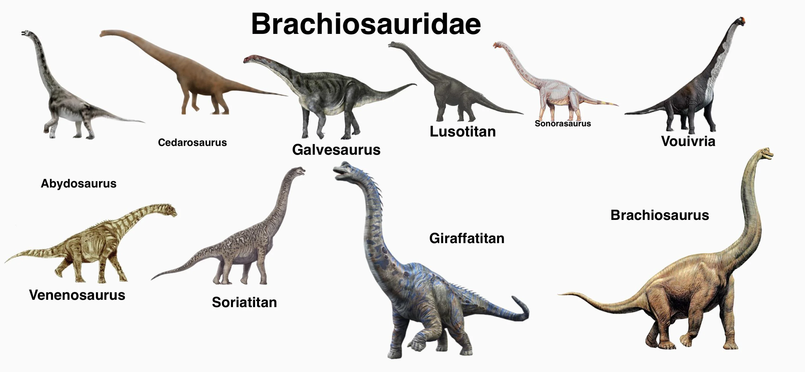
A família Brachiosauridae é composta por dinossauros saurópodes conhecidos por seus pescoços gigantes, além de seu tamanho fenomenal. Eram criaturas herbívoras, que poderiam se alimentar das folhas mais altas das árvores graças ao seu grande pescoço, assim como as girafas atuais, porém impressionantemente maior. O membro mais famoso desta família chama-se Braquiossauro e já foi considerado o maior animal terrestre que já existiu, mas perdeu este cargo por um titanossauro conhecido como Patagotitan
Braquiossauro

Braquiossauros foram dinossauros saurópodes que viveram durante o período Jurássico Superior, cerca de 154-150 milhões de anos atrás. Estima-se que o Braquiossauro tivesse entre 18 e 21 metros de comprimento e pesasse em torno de 28,3 a 58 toneladas. Assim como outros saurópodes, possuia um pescoço extremamente longo, crânio pequeno e um tamanho geral grande. Alguns saurópodes tinham a habilidade de se erguer nas duas patas traseiras, mas esse não era o caso do Braquiossauro.
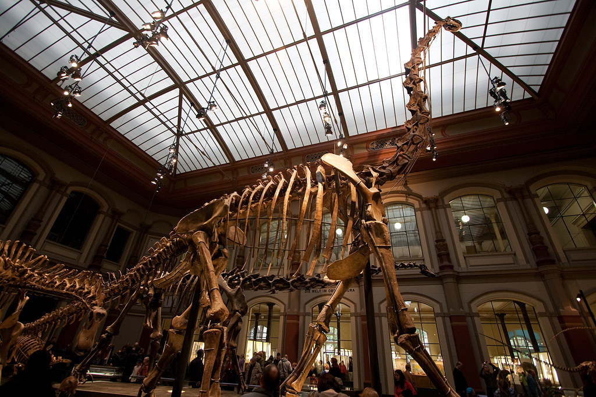
O primeiro fóssil de Braquiossauro foi descoberto em 1900 no colorado, EUA, pelo palentólogo americano Elmer S. Riggs e sua equipe. O fóssil é datado de ter cerca de 153 milhões de anos. O espécime tipo e mais completo de Braquiossauro já encontrado, parece representar um indivíduo subadulto, o que pode indicar que ele não estava em seu tamanho total
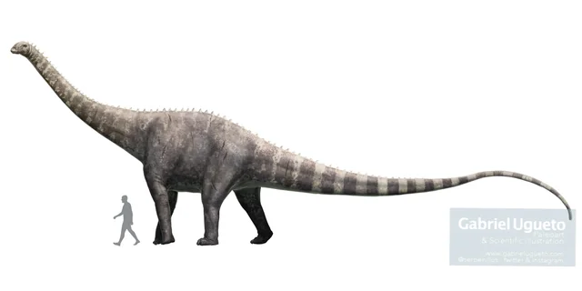
Cientistas já acreditaram que o Braquiossauro vivia na água, imaginaram que um animal tão grande seria pesado demais para se sustentar em terra, além disso, suas narinas ficavam no topo do crânio. Mas os especialistas agora sabem que a pressão da água tornaria impossível para o Brachiosaurus respirar ar. Outras características de seu esqueleto mostram que os braquiossauros eram bem adaptados a uma vida passada em terra, navegando nas copas altas das árvores. Seus esqueletos eram fortes, mas não enormes, então seu peso podia ser suportado sem qualquer ajuda da água.
Giraffatitan
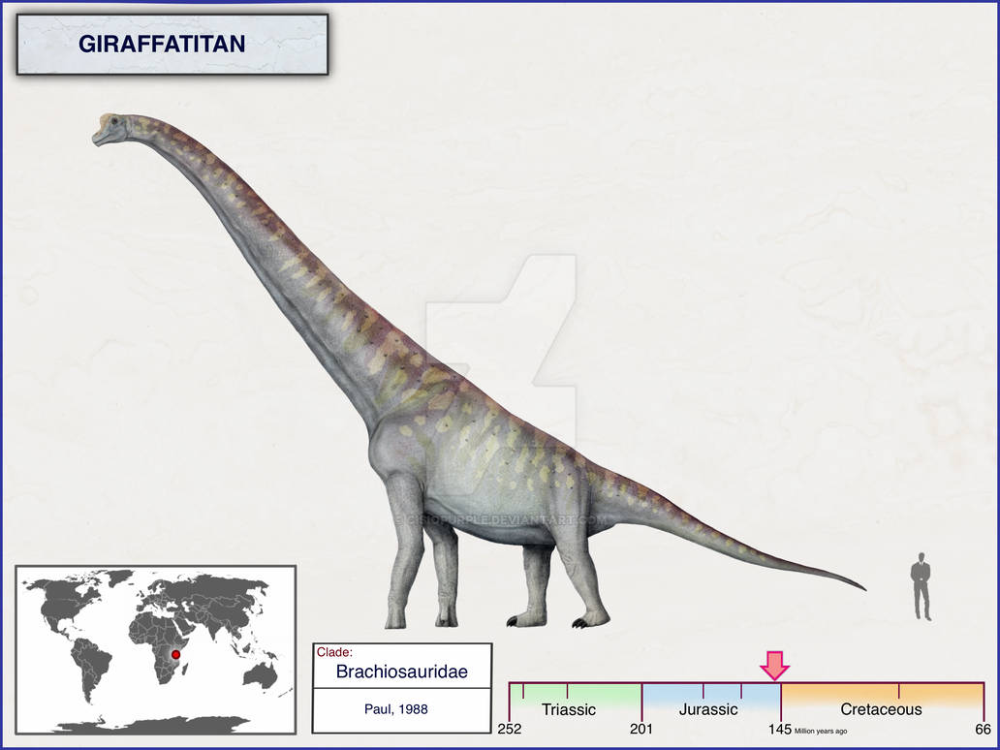
Giraffatitan ("girafa titânica") foi um dinossauro saurópode que viveu durante o período do Jurássico superior, onde hoje é a Tanzânia, na Africa. Foi originalmente identificado como uma espécie africana de Braquiossauro, mas posteriormente foi movido para outro gênero. As estimativas de tamanho para essa espécie são baseadas em um indivíduo subadulto, entre 21,8 e 22,5 metros de comprimento e cerca de 12 metros de altura.
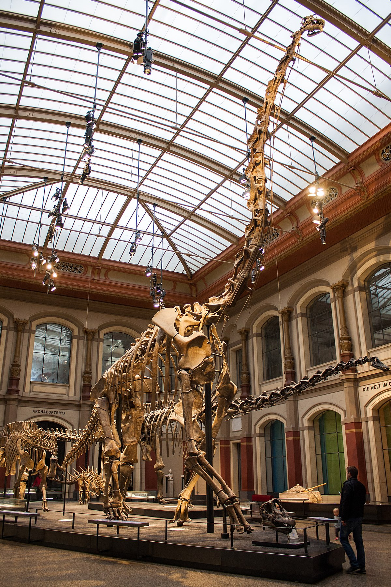
Giraffatitan brancai foi primeiro nomeada e descrita pelo paleontólogo alemão Werner Janensch em 1914 como Brachiosaurus brancai, com base em vários espécimes recuperados entre 1909 e 1912 da Formação Tendaguru. Por ser um animal de dimensões imensas, o Giraffatitan com certeza necessitava de altos quilos de comida por dia, estimam que ele precisaria comer cerca de 182 quilos de comida diariamente para suprir suas demandas diárias.

Entre 1914 e a década de 1990, o Giraffatitan foi considerado o maior dinossauro conhecido e, portanto, o maior animal terrestre da história. Na parte posterior do século XX, vários titanossauros gigantes encontrados parecem superar o Giraffatitan em termos de massa. No entanto, Giraffatitan e Brachiosaurus ainda são os maiores saurópodes braquiossaurídeos conhecidos a partir de material relativamente completo.
Lusotitan
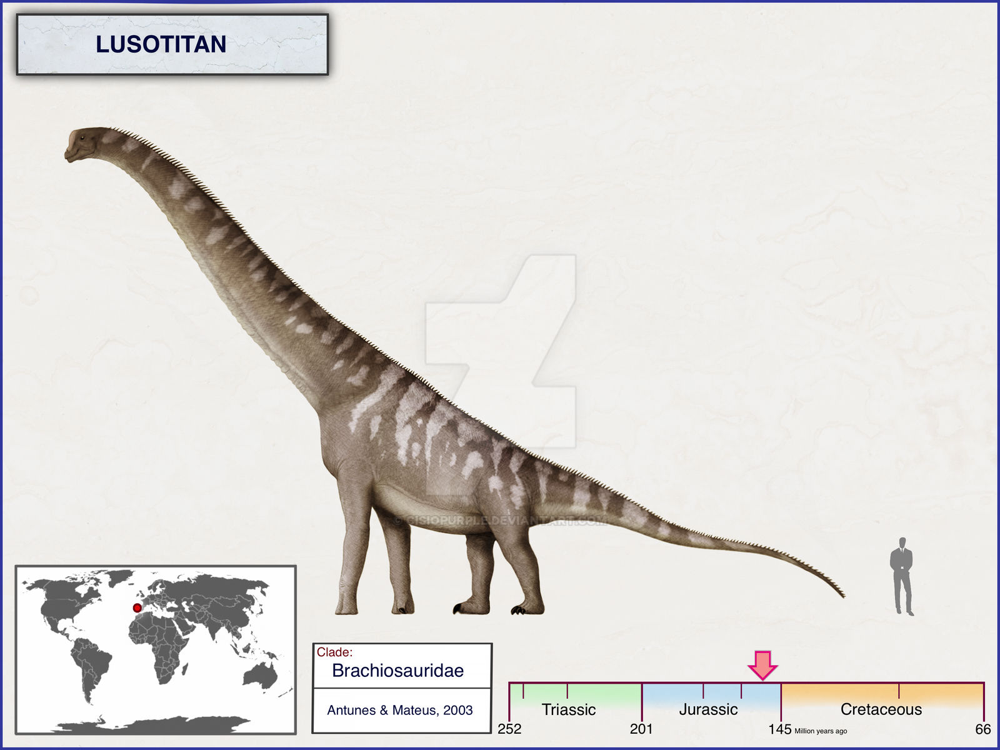
Lusotitan é um gênero de dinossauro saurópode do Jurássico Superior que viveu onde hoje é Portugal, descoberto na formação lourinhã. Originalmente confundido como uma espécie de Braquiossauro, descrita como brachiosaurus atalaienis, foi reclassificada em 2003, em um novo gênero chamado Lusotitan, sendo o maior dinossauro em tamanho e peso encontrado em Portugal.
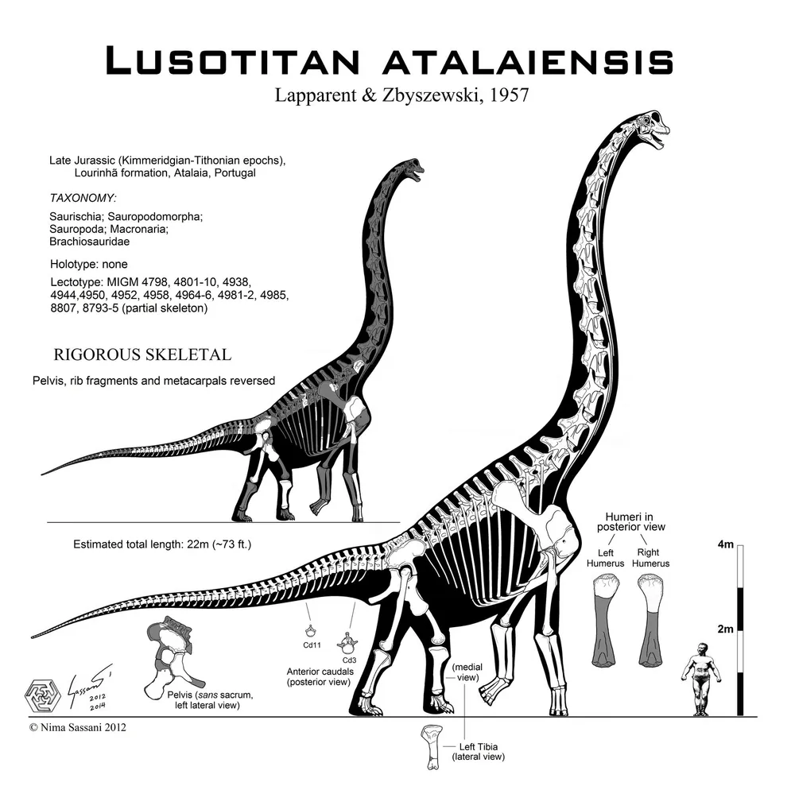
Calcula-se que este dinossauro poderia ter mais de 20 metros de comprimento, 12 de altura e mais de 20 toneladas. Assim como os outros membros da família Brachiosauridae, o Lusotitan necessitava de uma grande quantidade de comida diariamente, mas não há estimativas do quanto.